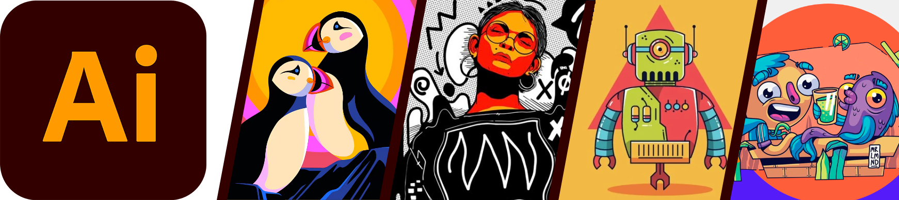
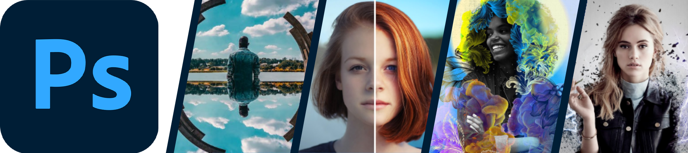
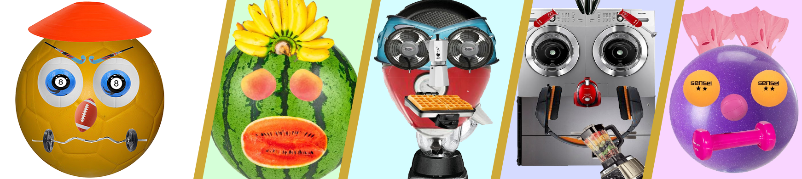

Illustrator es un software de edición de imágenes vectoriales propiedad de Adobe Systems que incluye otros programas como Photoshop, InDesign o Lightroom, por mencionar solo algunos. Con Illustrator es posible crear composiciones gráficas desde cero que luego pueden exportarse a todo tipo de escalas. En un mismo archivo se adapta a cualquier tamaño. Además, su compatibilidad con la nube permite trabajar sin importar el lugar y guardar cambios en tiempo real, lo que la convierte en una herramienta flexible y dinámica.
ILLUSTRATOR

PHOTOSHOP
Photoshop es el nombre de una más que conocida herramienta de edición de imágenes y fotografía, un programa que se utiliza en PC para retocar fotos y hacer montajes de carácter profesional, aunque también accesible para usuarios que llevan poco tiempo experimentando en ese terreno. Este programa sirve para crear cualquier imagen que se pueda imaginar. Al ser un programa de edición fotográfica, trabaja con mapas de bits y cualquier formato de imagen, permitiendo hacer montajes, manipular, modificar, editar y retocar cuanto se desee a través de todas las herramientas de las que dispone.

AVATAR PERSONAL
Un avatar es una imagen gráfica que representa a una persona real. Los avatares se utilizan como una imagen de alter ego o personaje en mundos virtuales, redes sociales, webs y comunidades. Estos pueden ser iconos personales en forma bidimensional o imágenes gráficas tridimensionales tales como figuras cómicas.
COMPOSICIÓN
Esta tarea consiste en realizar en el programa Photoshop una composición de imágenes relacionada a una temática especifica que se nos asignaba como por ejemplo podría ser Arte, Frutas, Deportes, Herramientas, etc, todo esto se realizaba descargando imágenes en internet, luego con las siguientes herramientas del programa le damos forma: Mover / Zoom / Mano / Marco rectangular - Elíptico / Lazo - Lazo Poligonal - Lazo Mágnetico / Varita Mágica.

PROTECCIÓN DE DERECHOS
Para este trabajo se buscó información de temas delicados que pasan todos los días en la sociedad, se trató con todo el respeto y seriedad que esto conlleva, los temas fueron ciberbullying, sexting y grooming, a partir de estos se realizó un pequeño juego de preguntas y respuestas para saber que tanto conoce las personas sobre este tipo de temas que ocurren en la vida cotidiana.

VIDEO SOCIAL
En este último trabajo que va un poco de la mano del anterior, tiene que ver con las problemáticas que nos podemos encontrar en la vida cotidiana en la sociedad, donde en grupos de a 3 alumnos se graben representando una problemática social que quieran. Consiste en un video de más de un minuto que debe contener un título, un desarrollo, un desenlace y por ultimo una reflexión.